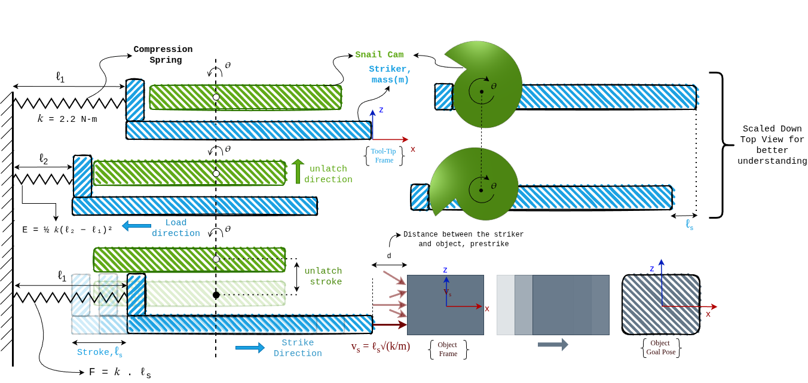
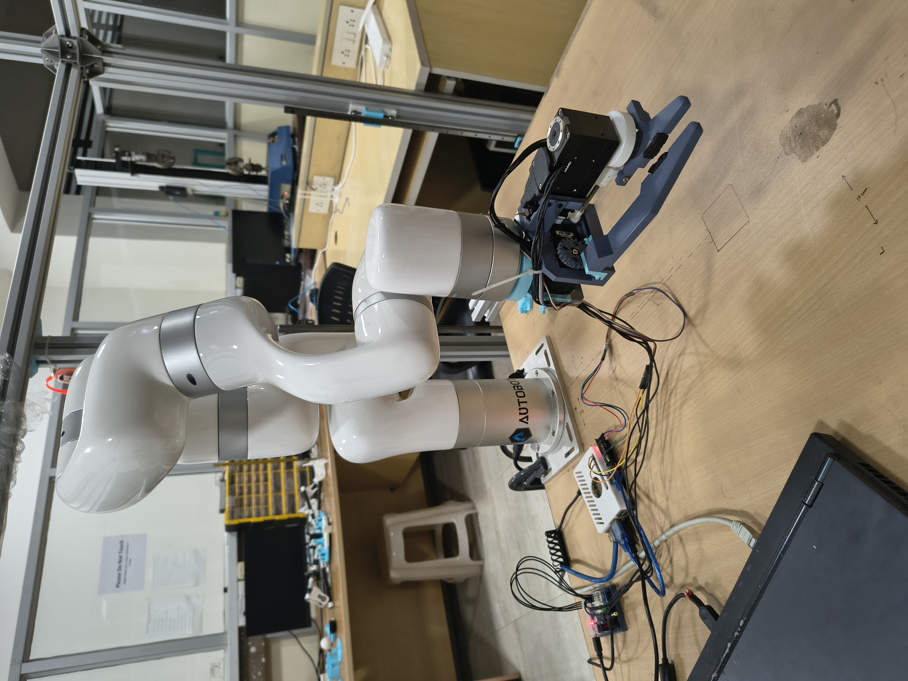
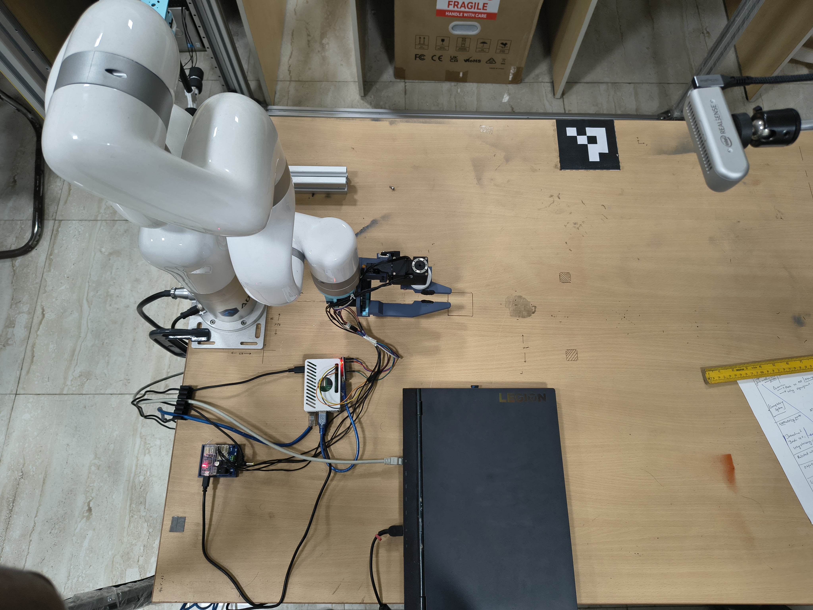

If striking is the solution for out-of-reach objects, why can't the manipulator just "punch" the object itself? Why build a dedicated striking gripper?
03 · Hardware

Mechanical Design
The end-effector integrates two manipulation modes in one compact mechanism. Pick-and-place uses a passive finger and one Dynamixel servo — mirroring conventional grippers. Striking employs a motor-driven snail cam to gradually compress a spring; a linear actuator unlatches at a precisely timed cam angle θ, converting stored elastic energy into a high-speed impulsive strike.

Fig 3. Working Principle of the LaMSA Striker — the snail cam loads the compression spring (k = 2.2 N/mm) from ℓ₁ to ℓ₂ storing energy E = ½k(ℓ₂−ℓ₁)². On unlatch at cam angle θ, the striker is released over stroke ℓₛ producing impact velocity vₛ = ℓₛ√(k/m).
Key Equations · LaMSA
The actuator (7–8 W) slowly charges the spring. On unlatch, the stored energy is released in ~10 ms — producing ~44 W of instantaneous striking power. This power amplification is the core advantage of LaMSA over direct actuation.
k = 2.2 N/mm · max compression = 12 mm · stroke = 12 mm · total mass ≈ 500 g
E = ½k(ℓ₂ − ℓ₁)² = 0.44 J
vₛ = ℓₛ√(k/m)
J = m·vₛ ≈ 0.0204 kg·m/s
P = E/t ≈ 44 W (t ≈ 10 ms)
vₛ = ℓₛ√(k/m)
J = m·vₛ ≈ 0.0204 kg·m/s
P = E/t ≈ 44 W (t ≈ 10 ms)
Multi-Functional End-Effector Capabilities


3D Model Viewer
Interactive CAD model of the complete finger assembly. Click and drag to rotate · Scroll to zoom.
Fig 4. Interactive 3D model of the complete finger assembly. Exported from Fusion 360 / SolidWorks as
striker_assembly.glb.
Component Assembly
Fig 5. Exploded view of the finger assembly — Linear Actuator Part (latch release),
Motor + Cam subassembly (Dynamixel XM-540 + snail cam), and Striker Part
(compression spring, coupler, 3 mm shaft, striker head, linear potentiometer).
Major Sub-Assemblies
Motor + Cam
Dynamixel XM-540 · snail cam compresses spring to desired θ
Dynamixel XM-540 · snail cam compresses spring to desired θ
Latch (Actuonix LA)
GPIO PWM disengages latch; triggers rapid spring release
GPIO PWM disengages latch; triggers rapid spring release
Spring + Striker Head
Stores elastic energy · delivers impulse on release
Stores elastic energy · delivers impulse on release
Passive Finger
Pick-and-place grasping alongside striking mode
Pick-and-place grasping alongside striking mode
Linear Potentiometer
Analog position feedback → Raspberry Pi 5
Analog position feedback → Raspberry Pi 5
Fabricated Prototype

Front / isometric view of the fabricated end-effector
Fig 5a. Fabricated prototype of the end-effector — front and isometric views.

End-effector mounted on xArm-7 in the experimental workspace
Fig 5b. Prototype mounted on the xArm-7 robotic manipulator with Intel RealSense D435i perception system.